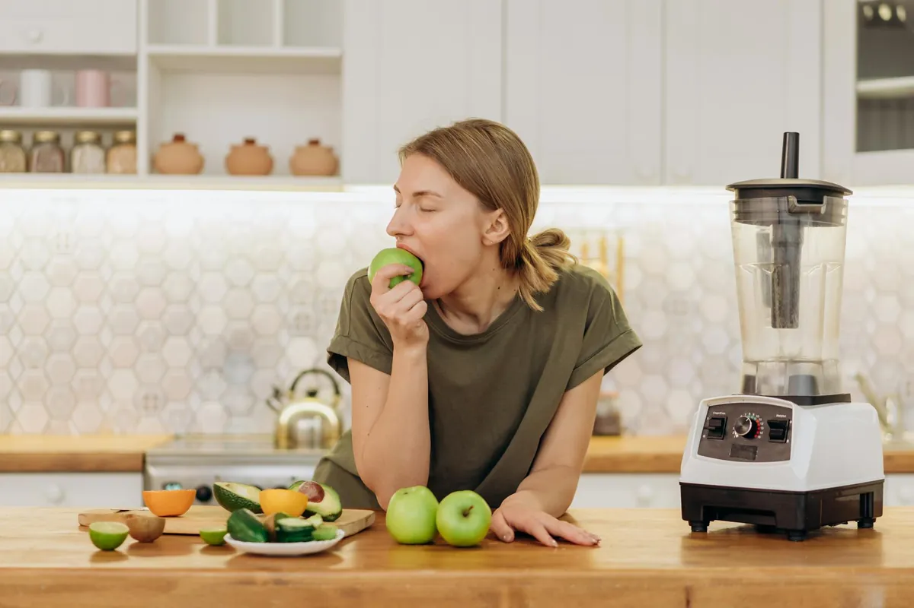

Bananas in Smoothies? Think Again! The Surprising Health Truth

Key takeaways
- I used to think my morning smoothie was the picture of health.
- Every day, I’d toss in a banana, a handful of spinach, some almond milk, and call it a day.
- Track what feels sustainable and adjust gradually.
I used to think my morning smoothie was the picture of health. Every day, I’d toss in a banana, a handful of spinach, some almond milk, and call it a day. It was creamy, sweet, and felt like a virtuous start. But then came the afternoon energy crashes, the bloating, and that general feeling of ‘ugh’ in my stomach. I blamed it on a million other things – stress, not enough sleep, too much coffee. It turns out, the culprit might have been hiding in plain sight, or rather, in my blender: the banana. Yes, Bananas in Smoothies? Think Again! The Surprising Health Truth is something I wish I'd known sooner.
For years, the banana has been the go-to ingredient for achieving that perfect smoothie texture. Its natural sweetness and creaminess are hard to beat. But here’s the kicker: bananas are high in natural sugars and starches. When you blend them, especially with other ingredients, you’re essentially creating a concentrated dose of these sugars. For many of us, particularly those with sensitive digestive systems, this can lead to a rapid spike in blood sugar, followed by an inevitable crash. This crash is often mistaken for general fatigue, but it’s directly linked to that sugar overload.
My own journey with this was eye-opening. I started tracking my food and how I felt, and the pattern was undeniable. On days I had a banana smoothie, I felt sluggish by 10 AM. On days I opted for berries or avocado instead, my energy levels were far more stable throughout the morning. It felt like a betrayal of my own healthy habits, but the evidence was right there in my gut.
Beyond the sugar rush, the type of fiber in bananas can also be a sticking point for some. They contain a good amount of pectin and resistant starch, especially when not fully ripe. While these are often touted as beneficial, for some, they can ferment in the gut, leading to gas and bloating. I remember one particularly embarrassing morning after a ‘healthy’ banana smoothie left me feeling like I’d swallowed a balloon all day. It wasn’t a pleasant experience, and it made me question everything I thought I knew about breakfast.
So, what’s the alternative? If you crave that creamy texture, consider incorporating healthy fats and different types of fiber. Avocado is a fantastic substitute, adding richness without the sugar spike. Chia seeds or flax seeds, when blended, also create a thicker consistency and provide omega-3s and fiber. You can also experiment with unsweetened Greek yogurt or silken tofu for creaminess. Berries, while containing natural sugars, offer a lower glycemic index and a wealth of antioxidants. For sweetness, a touch of stevia or monk fruit can be used, or simply rely on the natural sweetness of other fruits like dates (in moderation) or a small amount of pure maple syrup. Exploring these options can be a real game-changer for your gut health. This is a key part of building a more resilient gut, a topic I’ve explored in more detail in my related healthy tip.
The 2-Minute Win
Right now, take a look in your fridge. Do you have ingredients that mimic creaminess without high sugar? Think half an avocado, a spoonful of chia seeds, or some plain Greek yogurt. Make a mental note to try swapping out the banana in your next smoothie for one of these options. It’s a small change that can make a big difference.
For years, I thought ‘creamy’ in a smoothie automatically meant ‘banana.’ It took me a while to realize that creaminess can come from so many other sources, and often, those sources are much kinder to my digestion and energy levels. Don't be afraid to experiment! The perfect smoothie for *you* might not involve a banana at all. It's about finding what truly nourishes your unique body. If you're looking for more ways to optimize your morning routine, check out this another practical guide.
It’s not about demonizing bananas. They are a perfectly good fruit for many people, especially when eaten whole as a snack. The issue arises when we concentrate them in a blended drink, often alongside other sweeteners or ingredients that can exacerbate the sugar load. My own experience taught me that listening to my body was far more important than following a popular trend. This is a crucial insight for anyone looking for similar wellness insight.
If you’re struggling with energy dips or digestive issues, I encourage you to try this experiment for a week or two. Eliminate bananas from your smoothies and see how you feel. You might be surprised by the results. It’s a simple test that can provide profound clarity. This consistency is key to stay consistent with this.
Remember, health is personal. What works wonders for one person might not be ideal for another. Understanding the nuances of ingredients like bananas in smoothies is part of the journey to finding what truly makes you feel your best. Ready to explore more options? You can explore more gut guides and discover how small dietary tweaks can lead to significant improvements in your well-being.
Recommended Reading
- How to Stabilize Blood Sugar for Energy: My Journey to Feeling Better
- Is Your Blood Sugar Affecting Your Energy Levels?
- Mental Fatigue? Try These Quick Burnout Fixes
More in gut
Tummy Troubles? MIT's Gut-Healing Breakthrough: The Amino Acid You Need to Know
Discover MIT's gut-healing breakthrough! Learn about the crucial amino acid that can help your digestion and how to supp
Read article →Unlock Your Gut Health: The Microbiome Diet for a Happier You
Unlock your gut health with the microbiome diet! Discover how specific foods can boost digestion, mood, and well-being.
Read article →